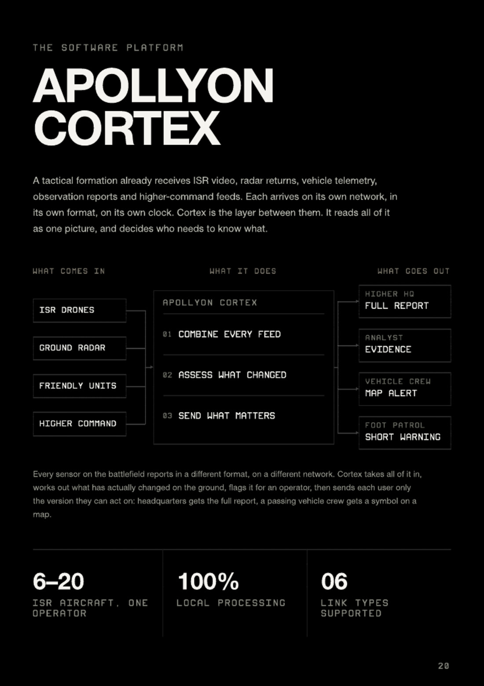
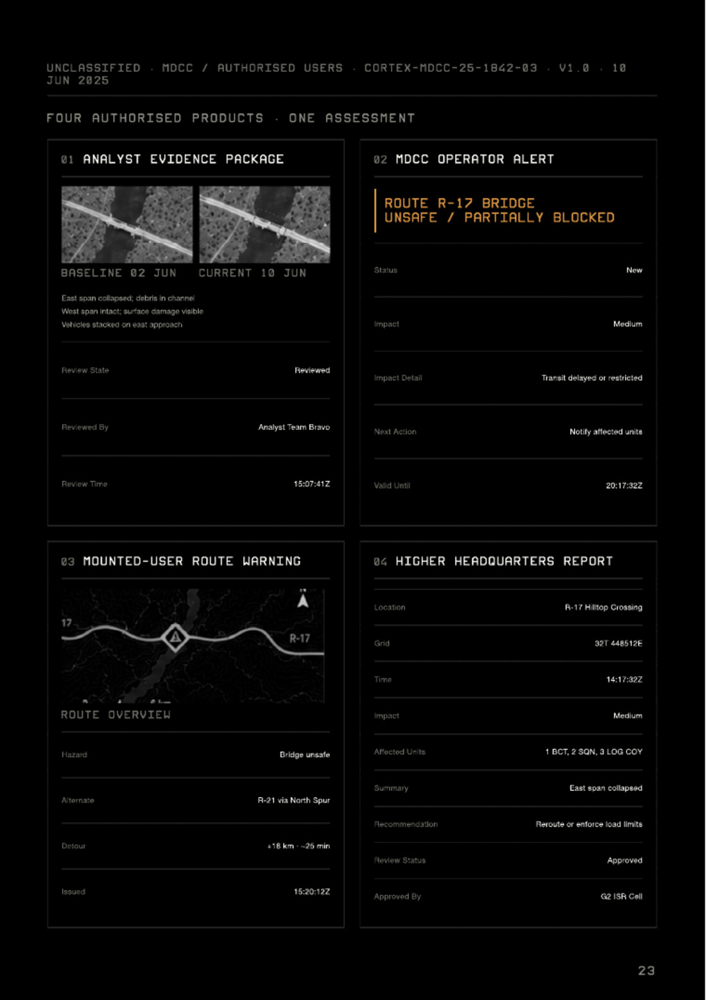
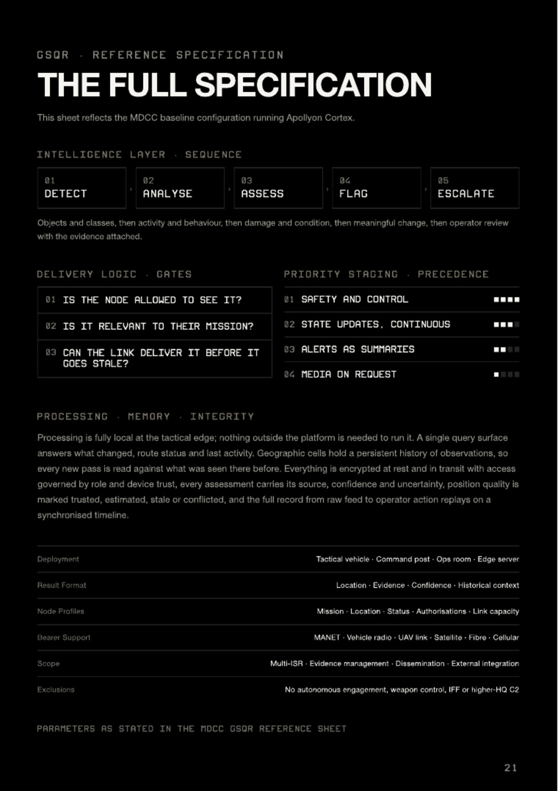

Apollyon Cortex the layer in between
A tactical formation already receives ISR video, radar returns, vehicle telemetry, observation reports and higher-command feeds. Each arrives on its own network, in its own format, on its own clock. Cortex is the layer between them: it reads all of it as one picture, and decides who needs to know what.
Platform baseline
What it is used for
Modern operations do not want for sensors. What has never existed is the layer that fuses them into one current picture and pushes only the relevant part of it to the people who need it.
| Role | What Cortex does |
|---|---|
| Multi-ISR supervision | One operator supervises 6–20 ISR aircraft while the vision layer watches every feed continuously and escalates only what has actually changed |
| Change detection | Geographic cells hold a persistent history of observations, so every new pass is read against what was seen there before |
| Evidence management | Every assessment carries its source, confidence and uncertainty, and replays on a synchronised timeline from raw feed to operator action |
| Dissemination | One assessment is composed into the form each authorised user can act on — full report, evidence package, map alert, short warning |
| Route and status queries | A single query surface answers what changed, route status and last activity |
| External integration | Feeds higher-headquarters systems and existing command infrastructure without requiring them to change format |
The intelligence pipeline
Cortex runs five stages in sequence. Each one narrows the problem, and each one is auditable on its own.
| Stage | Question answered |
|---|---|
| 01 · Detect | What objects and classes are present in the feed? |
| 02 · Analyse | What activity and behaviour are those objects exhibiting? |
| 03 · Assess | What is the damage and condition state? |
| 04 · Flag | Is this a meaningful change against the stored history of this ground? |
| 05 · Escalate | Which operator reviews it, and with what evidence attached? |

Delivery logic and precedence
Fusing feeds is the easy half. The hard half is deciding what to send, to whom, and in what form — under a link budget that may be a satellite hop or may be a vehicle radio. Three gates are evaluated before anything is transmitted:
- Is the node allowed to see it? Access is governed by role and device trust.
- Is it relevant to their mission? Node profiles carry mission, location, status, authorisations and link capacity.
- Can the link deliver it before it goes stale? A full evidence package over a constrained bearer is worse than a symbol that arrives in time.
| Rank | Class | Character |
|---|---|---|
| 01 | Safety and control | Highest precedence, always delivered |
| 02 | State updates | Continuous |
| 03 | Alerts | Delivered as summaries |
| 04 | Media | On request only |
One event, four products
One hazard on Route R-17 — a partial bridge collapse on the east span, detected by EO/ISR, assessed once — composed into the form each authorised user can act on:
- Analyst evidence package. Baseline and current imagery side by side, a written assessment, review state and reviewer.
- MDCC operator alert. Status, impact, impact detail, next action, valid-until time.
- Mounted-user route warning. Hazard, alternate route, detour cost in distance and minutes, issue time.
- Higher-headquarters report. Location, grid, time, impact, affected units, summary, recommendation, approval chain.

Processing, memory and integrity
Processing is fully local at the tactical edge; nothing outside the platform is needed to run it. That is a survivability property, not a preference — a fusion layer that depends on reachback stops working exactly when it is most needed.
- Memory. Geographic cells hold a persistent history of observations, so every new pass is read against what was seen there before. This is what converts a video feed into a change-detection system.
- Integrity. Everything is encrypted at rest and in transit, with access governed by role and device trust.
- Provenance. Every assessment carries its source, confidence and uncertainty. Position quality is explicitly marked as trusted, estimated, stale or conflicted rather than being silently averaged.
- Replay. The full record, from raw feed to operator action, replays on a synchronised timeline.

What Cortex explicitly does not do
No autonomous engagement. No weapon control. No IFF. No higher-headquarters C2. Cortex assesses and disseminates; the decision to engage stays with the chain of command, and the system is specified so that it cannot quietly acquire that authority.
This boundary is deliberate and is consistent with the company's position on discriminate force. A system that fuses sensors and also fires weapons removes the human review step precisely where discrimination is decided.
Cortex is deployed on the Mobile Distributed Command Centre as its primary tactical host, and runs unchanged in an operations room, at a fixed command post, on a rugged edge server or at higher headquarters.